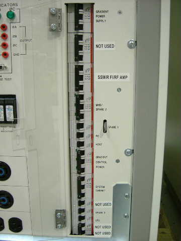

Operating Documentation
Direction 5133315-3, Rev# 14
Signa EXCITE HD 1.5T Service Methods
Module Version 1.0, Version Date 5/3/07
Operating Documentation |
ACGD Lite Teal PDU used on Signa OpenSpeed EXCITE systems has different breaker labels on the front of the unit. All other aspects of the vendor service manual are the same as what is used on core Signa Systems.
Illustration 1: HFO Teal PDU

Media File 1: Dir 2321162 ACGD Lite Teal PDU